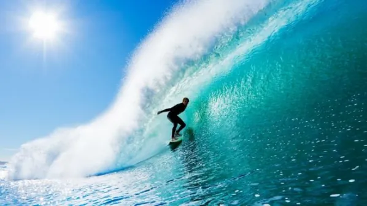
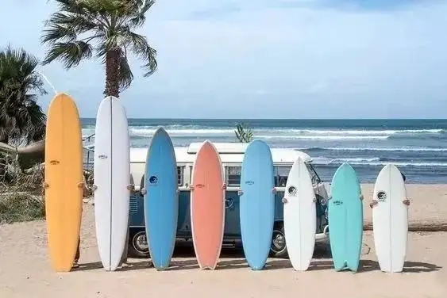
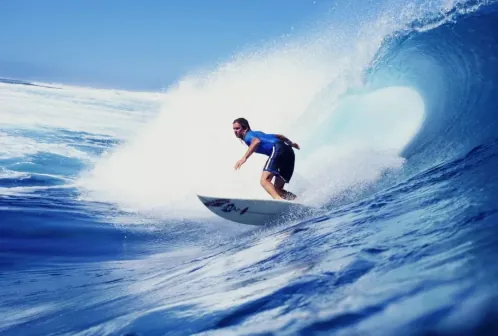
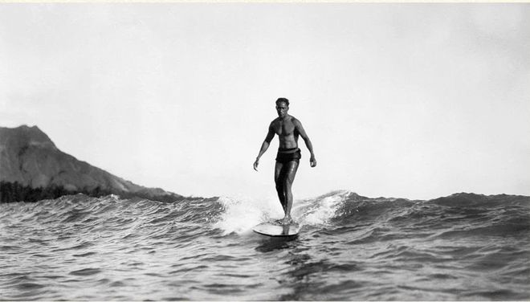

发展历史
- 500年间一800年间，冲浪运动起源于夏威夷。
- 1767年，欧洲人最早目击冲浪由 Dolphin的船员在大溪地所记录。
- 1779年，James King中尉在库克船长（James Cook）死亡后的日志亦发现记载了冲浪的艺术。

比赛规则
冲浪赛事一般分短板、长板男、女单项及男、女团体赛赛事时长根据海浪条件由赛会进行调整，取最佳条件进行比赛，整个赛事时长一般从1天至10天不等。（因此比赛不是每天都能看，需要注意赛事实时转播状态更新）。
单项赛事以个人轮次晋级形势进行。一般以每3、4人一组取本组成绩最好的前两名选手晋级下一轮。

专业术语
冲浪专业术语丰富多样，包括多种动作、设备、浪型和规则等。以下是一些详细介绍：
冲浪板类型：
1. 长板（Longboard）：长板是一种较长的冲浪板，通常长度在9到12英尺之间。它稳定性较高，适合初学者练习和小浪时的冲浪。
2. 短板（Shortboard）：短板是一种较短的冲浪板，通常长度在6到8英尺之间。它灵活性较高，适合高难度动作和大浪时的冲浪。
3. 鱼板（Fish）：鱼板是一种宽厚的冲浪板，尾部宽大，适合小浪时的冲浪，能够提供更好的浮力和速度。

主要赛事
世界冲浪竞标赛
首届世界冲浪锦标赛于1962年在澳大利亚的曼利举行其后每两年举行一次比赛。比赛土安拍动内油个浪或45分钟内冲6个浪，再根据冲很运20分制进行评分，如在30分钟内冲3个浪或45分钟内冲6个浪，再根据冲浪运动员冲浪的起滑、转弯、滑行距离和选择浪的难易程度等进行评分。

代表人物
杜克·卡哈纳莫
杜克·卡哈纳莫库出生于1890年，是一位顶尖的游泳运动员，同时也是世界公认的冲浪运动之父。他不止精于冲浪，还精通游泳、独木舟、钓鱼，潜水。他在水中动作优雅，是天生的水上运动好手。“离开水面，我什么也不是”他曾如此形容自己。

米基·朵拉
米基·朵拉生于1936年，他的母亲嫁给1940年代加州最顶尖的冲浪手Gard Chapin，由于当时受到不满社会现状、权威主义至上的继父的影响，这个叛逆的青少年逃离了军事住宿学校，出入于马布里、雷恩康等海岸在他20岁生日之前，马布里是他最喜欢的地方，而他也很快在那里称王。朵拉式的冲浪很新颖，极富自信而且深入那个时代的精神，虽然他从未住过海边，也不曾融入马布里的海滩圈，但马布里确实是造就了米基·朵拉的地方。